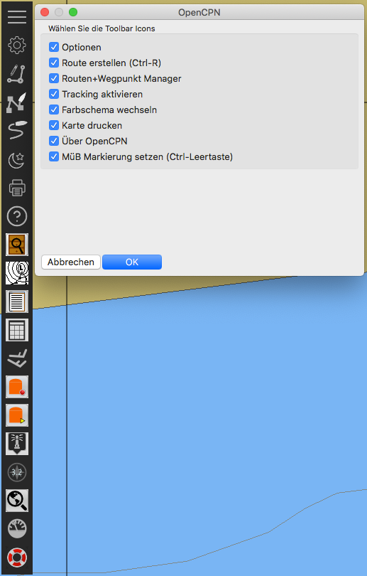
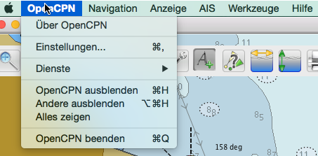
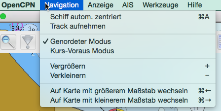
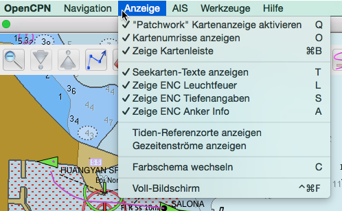
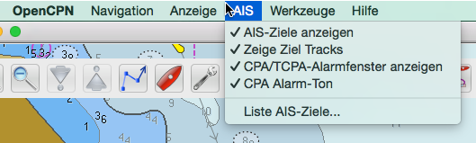
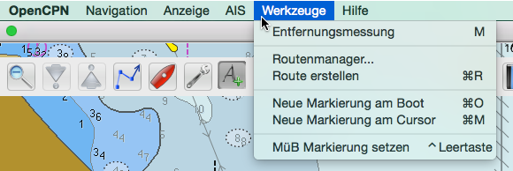
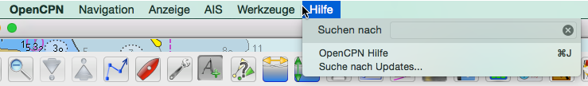
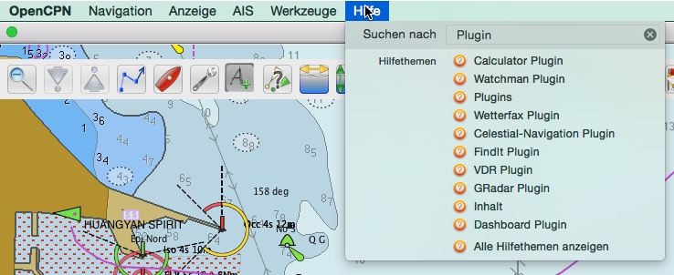
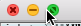

Werkzeugleiste Buttons
Die Werkzeugleiste hat sich gegenüber früheren Versionen erheblich verändert. Ob sich die Bedienung dadurch nun verbessert hat, muß jeder für sich selbst entscheiden. Die Funktionen sind jetzt auf zwei Leisten verteilt. Die größere linke Leiste läßt sich nur noch vertikal anordnen oder verkleinern. Außer einigen Standard Funktionen enthält sie vor allem die Plugins. Mit einem Rechtsklick auf die oberste Fläche ist außer der Verkleinerung noch das Menü zum Ausblenden der Standard Funktionen vorhanden.

Zwischen dem Hilfe-Symbol (Fragezeichen) und dem Mann-über-Bord Symbol ganz unten sind also die Schalt-Symbole für Plugins angeordnet. Die Grundposition ist vertikal
und oben links angedockt. Sie schnappt an den Ecken. Rechts-Klick auf das "Anfassen"-Symbol (Bild: ) öffnet das Menü
wie oben zum Aus-/Einblenden von Standard Funktionen. Ein Links-Klick auf das "Anfassen"-Symbol versteckt hingegen die Werkzeugleiste. Sie ist dann zu einem Symbol oben
links im Bildschirm geschrumpft (Bild: ). Ein Links-Klick auf dieses Symbol links oben im Bildschirm aktiviert die
Werkzeugleiste wieder zur ursprünglichen Größe. Ist in den Einstellungen die Werkzeugleiste als transparent konfiguriert, wird sie aktiv, wenn der Mauszeiger darüber
wandert. Einige Symbole fungieren als Schalter. Eine kurze Beschreibung wird beim Wandern des Mauszeigers über das jeweilige Symbol angezeigt.
Weitere Symbole können hinzu kommen, wenn weitere Plugins verfügbar bzw. aktiviert sind.
Die Symbole von oben nach unten:
 Starte Einstellungen (Mehr Infos)
Starte Einstellungen (Mehr Infos)
 Erzeuge Route (Mehr Infos)
Erzeuge Route (Mehr Infos)
 Routen/Track/Wegpunk-Manager (Mehr Infos)
Routen/Track/Wegpunk-Manager (Mehr Infos)
 Umschaltung Track Ein/Aus (Mehr Infos)
Umschaltung Track Ein/Aus (Mehr Infos)
 Wechsel Farbschema (Mehr Infos)
Wechsel Farbschema (Mehr Infos)
 Karte Drucken
Karte Drucken
 Über OpenCPN
Über OpenCPN
 Zeigt/versteckt das Dashboard Plugin (Mehr Infos)
Zeigt/versteckt das Dashboard Plugin (Mehr Infos)
 Grib Überlagerung Plugin (Mehr Infos)
Grib Überlagerung Plugin (Mehr Infos)
 Mann über Bord (MüB) Markierung einfügen (Mehr Infos)
Mann über Bord (MüB) Markierung einfügen (Mehr Infos)
 Das separate GPS-Status und Karten-Orientierungs Symbol ist normalerweise in der oberen rechten Ecke.
Das separate GPS-Status und Karten-Orientierungs Symbol ist normalerweise in der oberen rechten Ecke.
 Kurs oben/Nord oben (Mehr Infos)
Kurs oben/Nord oben (Mehr Infos)
 GPS Status (Mehr Infos)
GPS Status (Mehr Infos)
Die andere Werkzeugleiste unten rechts  enthält die Funktionen (von links nach rechs):
enthält die Funktionen (von links nach rechs):
- Mit den (+) und (-) Symbolen die Skalierung der Karte vergrößern/verkleinern. ( Mehr Infos )
- Nur den aktuellen Maßstab der Karte anzeigen. ( Mehr Infos )
- Schiff zentrieren auf der Karte. ( Mehr Infos )
- Mit dieser Schaltfläche das Kartenmenü aufrufen.
Menüleiste bei Mac OS X
Die schon vor einiger Zeit nur für meine Mac OS X Version eingeführte Menüleiste von OpenCPN wurde inzwischen verbessert und auch in die offizielle Version übernommen. Sie enthält sowohl Funktionen der Werkzeugleiste als auch der Kontext-Menüs. Im Vollbild-Modus ist die Menüleiste versteckt und erscheint, wenn der Mauszeiger ganz an den oberen Rand bewegt wird.
Es gibt nun also folgende Menüs:







Im Moment ist der Update-Service des Programms (Menüpunkt im Hilfe-Menü) noch nicht funktionsfähig. Das soll mit einem späteren Schritt kommen. Außerdem sind weitere Änderungen an den Menüs zu erwarten. So macht der Menüpunkt "Neue Markierung am Cursor" z.Zt. wenig Sinn, da der Cursor dann ja im Menü steht.
Fenster-Gadgets bei Mac OS X
Das Hauptfenster von OpenCPN enthält oben links die gleichen Gadgets mit den gleichen Funktionen wie bei allen OS X Programmen: 
Mit diesem Gadget kann in den Vollbild-Modus geschaltet werden und bei der OS X Version El Capitan bewirkt ein längerer Mausklick hierauf die Umschaltung in den Splitscreen-Modus. Dieser eignet sich z.B. besonders dazu, neben dem OpenCPN Screen auch einen Screen mit Daten aus Markierungs-Verknüpfungen anzuzeigen.